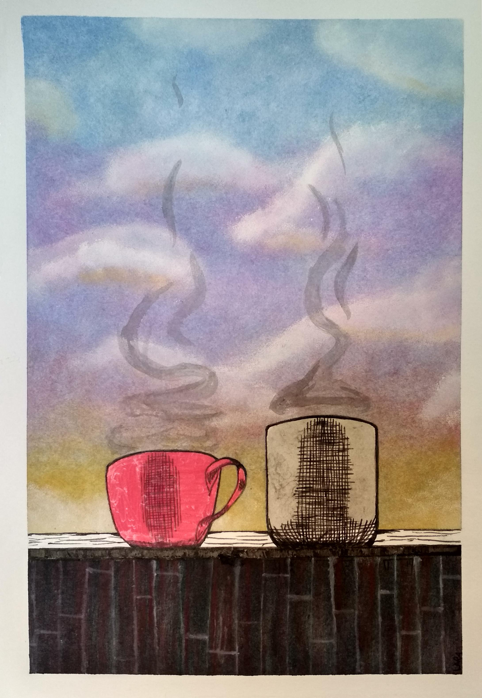

how to make tea

At the very least, tea /hot chocolate is a flavourful way of getting enough fluid into your body each day.
On top of that, studies have shown teas can help protect your teeth and your heart
ingredients
- Tea Bag
- Sugar/Honey
- Water
- Milk
instructions
- Run a clean water,boil it once to maintain high oxygen level
- Pop a tea bag or hot chocolate in the mug always BIG CUP
- Put some hot water and stir it up
- Before removing the tea bag, gently squish it with a spoon against the side of the mug. Not too much or
you'll make it bitter
- If you want, throw in some milk or sugar or honey or nothing else at all.